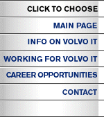

|  | ||
GEDREVEN DOOR DE VOLVO SPIRIT
Volvo is een internationale groep van Zweedse origine met 73.000 medewerkers verspreid over meer dan 20 landen. De groep neemt een vooraanstaande positie in als producent van personenwagens, vrachtwagens, bussen, scheeps- en industriële motoren, vliegtuigmotoren en machines voor burgerlijke bouwkunde. De Volvo-ondernemingen in België tellen 6.500 werknemers en realiseerden in 1997 een omzet van 155,2 miljard BF. De uitgebreide industriële en commerciële activiteiten van Volvo in België vereisen een goed uitgebouwd computernetwerk, met on-line verbindingen met Zweden, met de belangrijkste markten waar ook ter wereld en met vele toeleveranciers. Dit computernetwerk wordt beheerd door Volvo Information Technology Belgium NV, dat met haar 79 personeelsleden de service verleent inzake electronische gegevensverwerking aan alle Volvo-ondernemingen in de Benelux, Frankrijk, Spanje en Italië. Door de steeds toenemende opdrachten en de verdere uitbreiding van onze activiteiten kijken wij voor Volvo Information Technology Belgium uit naar gemotiveerde medewerkers die actief willen meewerken aan het realiseren van onze doelstellingen. Comments,
questions or suggestions? Please visit our Contact Page. |
||